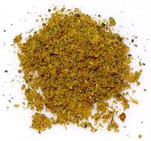

 |
Jamaican Curry PowderJamaica | ||||
| Makes: Effort: Sched: DoAhead: |
1/2 cup ** 30 min Yes |
Curry powder was brought from India (see History) and evolved into a unique spicing tailored to Caribbean tastes and ingredients. See Ingredients. | |||
|
|
------- 2 2 1 1 1/2 2 1/2 ------ 1/4 1 1/2 1/2 2-1/2 |
--- t T T T T t T --- t T T T T |
-- Toasted Cumin seeds Coriander seeds Mustard seeds Fenugreek seeds Peppercorns black Allspice berries Anise seeds ------------ Scotch Bonnet (2) Clove, whole Thyme, dry Ginger, ground Turmeric, ground |
Make - (30 min)
|